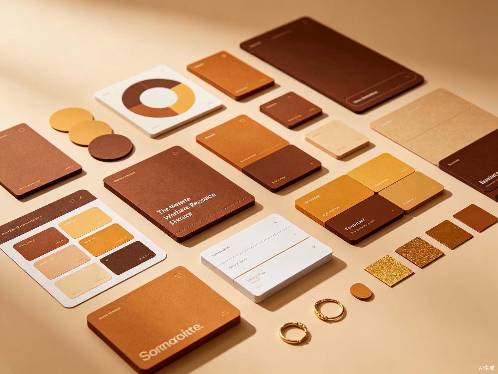
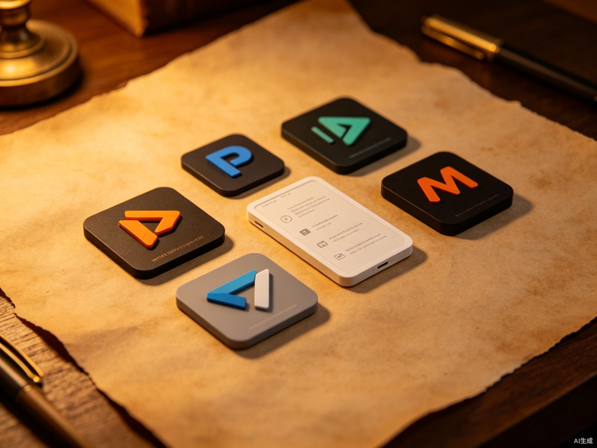
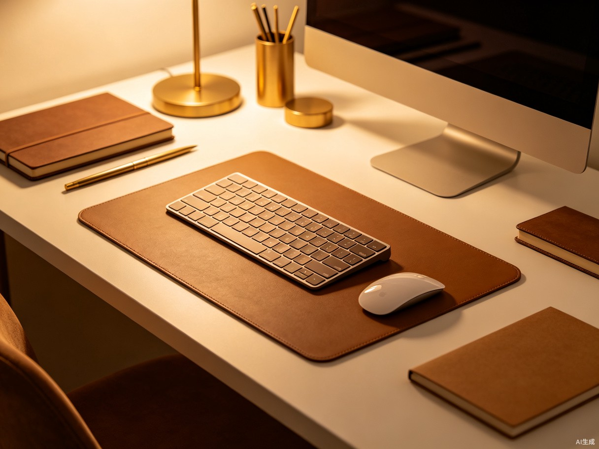

Ant Design Pro
设计系统企业级中后台前端解决方案
UI设计
React
精选的设计工具和资源合集

企业级中后台前端解决方案

Hand-crafted SVG icons

Complete design system toolkit
Google's latest design language
Flexible icon family
Design token specification